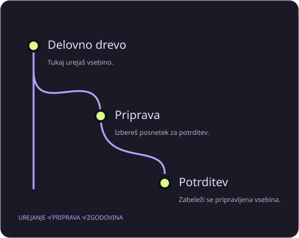

Pošiljanje je zavrnjeno: najprej preberi razliko
Kaj pomeni non-fast-forward, kako pregledati oddaljene potrditve in zakaj prisilno pošiljanje ni prvi korak.
Manj ugibanja. Več razumevanja.
Git je nekaj zavrnil. Ali pa si potrdil napačno stvar. Poišči razlago, preveri posledice in šele nato izberi naslednji korak.
Brez prijave. Brez povezovanja z računom. Brez nalaganja kode.

Izberi situacijo. Najprej dobiš korake za pregled, nato razlago konkretnega problema.
Odpri delavnico ↗Loči spremembo priprave, popravek potrditve in zavrženje vsebine. Brez izvajanja ukazov.
Odpri delavnico ↗Preberi obe strani, sestavi smiselno končno vsebino in preveri učni cilj.
Odpri delavnico ↗Poglej, kaj se zgodi z datoteko med urejanjem, pripravo in potrditvijo.
Odpri delavnico ↗Kaj pomeni non-fast-forward, kako pregledati oddaljene potrditve in zakaj prisilno pošiljanje ni prvi korak.
Razloči napačno delovno mapo, prenesen arhiv in izgubljene metapodatke pri napaki not a git repository.
Preveri shranjevanje datoteke, delovno mapo, prezrta pravila in razliko med delovnim drevesom ter pripravo.
Zakaj pravilo prezrtja ne odstrani datoteke iz indeksa in kako razumeti razliko med sledenjem ter lokalnim obstojem.
Kako deluje git restore --staged in zakaj odstranjevanje iz priprave ni isto kot zavrženje vsebine datoteke.
Primerjava treh ukazov po njihovem učinku na delovne datoteke, indeks in zgodovino z opozorili pred izgubo sprememb.
Ne. Ne povezuje se z GitHubom in nima dostopa do tvojih datotek. Ponuja razlage ter učne primere. Laboratorij spreminja samo prikazano učno stanje v pomnilniku brskalnika.
Ne pošiljaj žetonov, gesel ali zasebne kode. Za uporabo jih ne potrebujemo. Pomočnik deluje z izbirami, vaja pa z vnaprej pripravljenimi primeri.
Ukazi in prepoznavna sporočila ostanejo natančno zapisani, da jih lahko primerjaš z Gitom. Razlage, navodila in uporabniški vmesnik so v slovenščini.
Ne. Gitova zgodovina ne vsebuje nujno nepotrjenih ali nesledenih datotek, lokalni dnevniki pa niso trajna obljuba obnove. Pomembne podatke varuj tudi neodvisno.